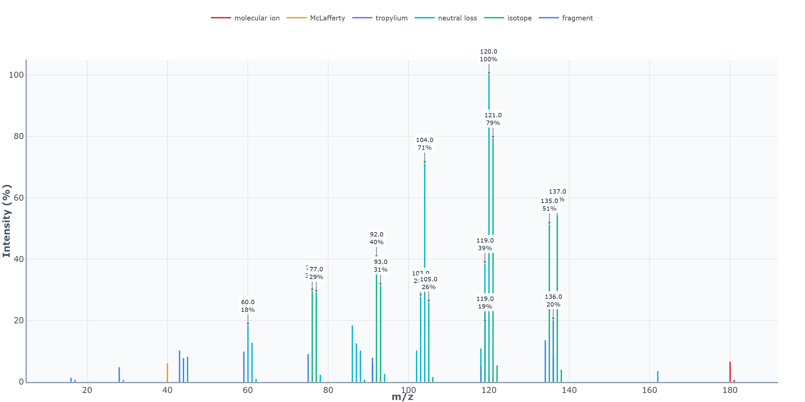
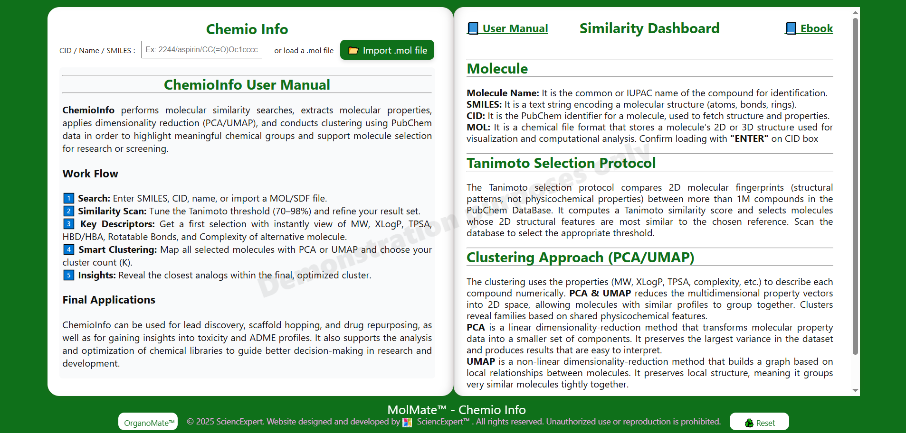
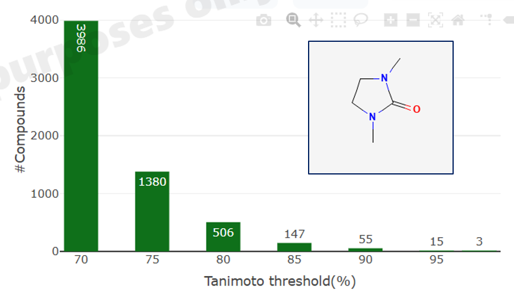
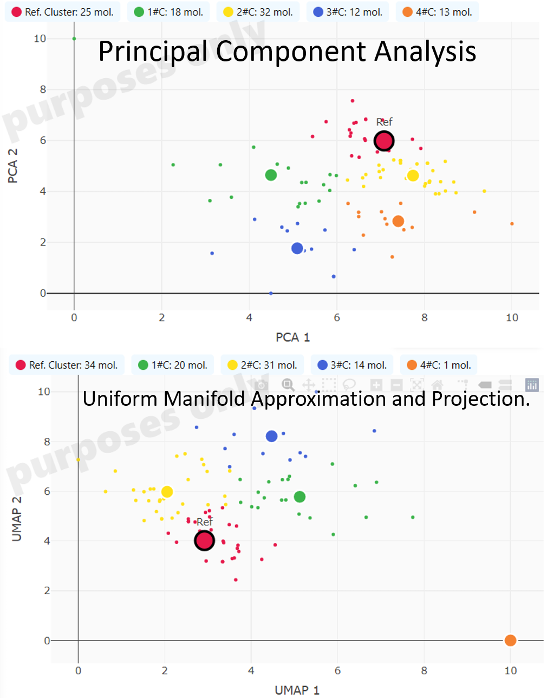

6️⃣
Step 6 – Digital Spectrum Construction
From the list of predicted carbon lines (δᵢ, intensityᵢ), the script builds a continuous ¹³C spectrum:
🗨️ A ppm axis is defined over the selected window (e.g. 0–220 ppm) with a fixed number of points (digital resolution).
🗨️ Each carbon line is rendered as a Lorentzian or Gaussian peak centered at δᵢ.
🗨️ Peak width is controlled by a line-broadening or FWHM parameter.
The contribution of each carbon is added point-by-point to the spectrum array; overlapping peaks naturally combine, reproducing realistic envelope and crowding at specific ppm regions.
7️⃣
Final Spectrum + Equipment Effects (Instrument Physics)
To transform the “ideal” line spectrum into a realistic recording,
RMNC13™ applies instrument-like effects to the simulated data.
📈 Line broadening & resolution: global broadening mimics finite relaxation times and processing (exponential/Gaussian), merging close signals and reducing resolution.
📈 Baseline behavior: optional baseline shaping introduces gentle curvature or offsets, matching typical processed spectra.
📈 Noise injection: a controlled random noise term is added to the intensity array, reproducing realistic S/N and making weak carbons less visible.
📈 Instrument presets: presets (e.g. “75 MHz routine”, “125 MHz high-field”) bundle frequency, broadening, noise and window parameters, so the same molecule can be viewed under different experimental-quality conditions.
The final array (intensity vs ppm, after broadening, baseline and noise) is rendered as the displayed ¹³C NMR spectrum, while the assignment table keeps a clean, interpretable record of each simulated carbon signal.
5.4 Mass Spectroscopy
5.4.1. Mass Spectroscopy Theory
Mass spectrometry (MS) is an analytical technique based on the measurement of the mass-to-charge ratio (m/z) of ionized chemical species.
In a mass spectrometer, molecules are converted into ions through an ionization process, creating charged particles that can be manipulated and analyzed using electric and/or magnetic fields.
Only ions with specific m/z values reach the detector, generating the mass spectrum.
The position of each peak in the spectrum corresponds to a particular m/z value, while the intensity reflects the relative abundance and stability of the ion.
The molecular ion (or quasi-molecular ion) provides direct information about the molecular weight of the compound. Additional peaks arise from fragment ions,
formed when the molecular ion undergoes characteristic bond cleavages during or after ionization. These fragmentation pathways are governed by molecular structure and ion stability,
producing patterns that are highly informative for structural analysis.
5.4.2. Practical Aspects of Mass Spectrometry
In practice, mass spectrometry can be performed using a variety of ionization techniques (such as electron ionization, electrospray ionization, or chemical ionization)
and mass analyzers (quadrupole, time-of-flight, ion trap, or orbitrap). The choice of technique depends on the nature of the sample and the level of structural information required.
Key practical features of a mass spectrum include:
✅ m/z values, indicating molecular and fragment ion masses
✅ Relative peak intensities, reflecting ion stability and abundance
✅ Isotopic patterns, providing information on elemental composition
✅ Fragmentation patterns, revealing structural subunits and bonding
Mass spectrometry can analyze very small sample quantities and is often coupled with separation techniques such as gas or liquid chromatography to handle complex mixtures.

5.4.3.Final Applications of Mass Spectrometry
Mass spectrometry is a cornerstone analytical method across many scientific fields due to its sensitivity, speed, and structural insight. Its main applications include:
✅Molecular weight determination and elemental composition analysis
✅Compound identification and structural elucidation
✅Detection of impurities and trace components
✅Complex mixtures analysis in environmental, pharmaceutical, and biological samples
✅Confirmation of synthetic products and reaction monitoring
By providing precise mass information and characteristic fragmentation data, mass spectrometry plays a critical role in modern chemical analysis, complementing spectroscopic techniques such as NMR and IR for comprehensive molecular characterization.
5.4.4. MoleMate™ - Mass Spectroscopy
MoleMate™ Spectrum simulates a mass spectrum starting from a molecular structure and a set of instrument/ionisation parameters.
It follows a hybrid, chemically informed approach, combining:
✅ In silico fragmentation models inspired by CFM‑ID, MetFrag, SIRIUS, NEIMS, etc.
✅ Classical organic fragmentation rules (α‑cleavage, McLafferty, rearrangements)
✅ Charge localisation and fragment annotation (formula, type, precursor)
✅ Instrument‑dependent spectral effects (resolution, centroiding, noise)
The goal is to simulate an MS or MS/MS spectrum, including prediction, interpretation (fragment table) and realistic acquisition effects.
1️⃣
Step 1 – User Interface and Experimental Parameters
At initialization,
MoleMate™ Spectrum builds an interactive interface with both a table and a spectrum canvas.
The user can select or emulate:
🧪 Ionisation mode (EI, ESI, positive/negative, MS/MS level)
🧪 Collision energy / fragmentation “harshness”
🧪 Mass analyser resolution (unit, low, high‑res)
🧪 m/z range and intensity scaling (relative %, base peak = 100)
These parameters directly modulate the fragmentation depth, the number of peaks, their relative intensities and peak shapes, reproducing different experimental conditions.
2️⃣
Step 2 – Molecular Parsing and Pre‑Ionisation
MoleMate™ Spectrum starts from a molecular representation (SMILES/MOL‑derived atom–bond graph) and constructs an internal connectivity model.
From this model, it determines:
⚽ Exact monoisotopic mass and sum formula of the neutral molecule
➡️ Potential ionised species: M⁺- , [M+H]⁺, [M–H]⁻, adducts depending on mode
The selected ionisation mode defines the precursor ion that will be propagated through the fragmentation engine (e.g. radical cation for EI, protonated molecule for ESI‑MS/MS).
3️⃣
Step 3 – Fragmentation Tree and Rules
MoleMate™ Spectrum then constructs a fragmentation tree in silico, guided by both heuristic rules and probabilistic scoring inspired by CFM‑ID, MetFrag and related tools.
For each possible bond cleavage or rearrangement, the engine evaluates:
💬 Classical rules: α‑clivage à côté d’hétéroatomes, rupture d’allylique/benzyl, McLafferty, rétro‑Diels–Alder, pertes neutres typiques (H₂O, CO, CO₂, NH₃…)
💬 Stability of resulting cations/radicals/anions (benzylic, allylic, acylium, iminium, etc.)
💬 Stepwise MS/MS levels (fragmenting fragments again when energy is high)
Fragments are organised in a tree (precursor → 1
stgeneration fragments → 2
nd generation, etc.)
4️⃣
Step 4 – m/z, Charge and Formula Assignment
For each fragment node, the
MoleMate™ Spectrum computes:
🗨️ Exact mass and m/z = mass / |charge| (typically z = ±1)
🗨️ Elemental formula of the fragment (C, H, N, O, X…)
🗨️ Fragment type (molecular ion, isotope peak, neutral loss, backbone cleavage, diagnostic fragment…)
This information is then formatted into the MS fragment table.
5️⃣
Step 5 – Relative Intensity Modeling
Each candidate fragment is given a relative intensity that reflects its likelihood of formation and stability, following ideas from CFM‑ID, NEIMS, etc.
The script combines several factors:
🗨️ Stability and resonance of the charged center
🗨️ Competition between alternative fragmentation channels
🗨️ Penalties for multi‑step, high‑energy pathways at low collision energy
The intensities are then normalised so that the most intense peak becomes the base peak (100%), and all others are scaled relatively, matching standard experimental representation.
6️⃣
Step 6 – Digital Spectrum Construction
From the list of (m/zᵢ, Iᵢ) values,
MoleMate™ Spectrum constructs the stick spectrum.
🗨️ A discrete m/z axis is defined over the chosen window (e.g. 0–800).
🗨️ For each fragment, a vertical line (stick) is drawn at m/zᵢ with height proportional to W (%) = Iᵢ.
🗨️ Resolution settings may broaden sticks into narrow profiles (Gaussian/Lorentzian) for high‑res simulation.
Isotopic patterns (M+1, M+2…) can be added as neighbouring peaks with intensities derived from elemental composition, yielding realistic envelopes for Cl/Br or high‑mass fragments.
7️⃣
Final Spectrum + Equipment Effects (Acquisition Physics)
To convert the ideal stick spectrum into a realistic MS acquisition,
MS‑Mate™ applies instrument‑like effects to the simulated data.
📈 Peak shape & resolution: each discrete line can be convoluted with an instrument response (Gaussian) whose FWHM depends on the selected mass analyser, blurring close peaks at low resolution.
📈 Centroid vs profile mode: at high resolution, the internal profile may be sampled then centroided to obtain final peak positions and intensities.
📈 Baseline & detector noise: a combination of baseline offset and random noise is added to the intensity trace, mimicking electronic noise, chemical background and detector fluctuations.
📈 Instrument presets: presets emulate typical platforms (quadrupole, ion trap, TOF, Orbitrap‑like) by tuning resolution, mass accuracy, noise and dynamic range, so the same theoretical fragmentation appears differently depending on the “equipment”.
The final simulated spectrum (m/z vs intensity after peak shaping, baseline and noise) is rendered in the MS canvas, while the fragment table summarises each peak’s origin, formula, type and pathway, allowing interpretation comparable to real MS(/MS) experiments.
Chapter 6 : MoleMate™ ChemioInfo:
The Property Cluster Explorer
MoleMate™ ChemioInfo – Property Cluster Explorer identifies groups of similar molecules by combining PubChem data, molecular properties, dimensionality reduction (PCA/UMAP) and clustering, to guide compound selection and library optimization.

Lead discovery and scaffold hopping: Find new chemotypes around a starting molecule, based on both structure and physicochemical properties.
Drug repurposing and analog search: Identify property‑matched analogs of known drugs or bioactive molecules that might share similar ADME or activity profiles.
Toxicity/ADME risk zoning: Use clusters in property space to spot molecules falling into “undesirable” regions (too lipophilic, too polar, highly complex, etc.).
Chemical library design and trimming: Reduce a large PubChem‑derived set to a smaller, diverse yet property‑balanced subset for screening or docking
6.1. Interest and purpose
👍 Smart similarity beyond structure only: The tool starts from a structural similarity search (Tanimoto on fingerprints) and then re‑evaluates similarity in property space (MW, XLogP, TPSA, HBD/HBA, rotatable bonds, complexity, etc.).
👁️ Visual chemical space mapping: PCA/UMAP project molecules into 2D so you can visually see clusters of analogs and outliers, instead of reading long tables.
📗 Better library and lead design: By grouping compounds with similar profiles, the program helps to select representative molecules, avoid redundancy, and identify interesting series for SAR, ADME or toxicity exploration.
6.2. Tanimoto Selection Protocol
The Tanimoto selection protocol compares 2D molecular fingerprints (structural patterns, not physicochemical properties) between more than 1M compounds in the PubChem DataBase.
It computes a Tanimoto similarity score and selects molecules whose 2D structural features are most similar to the chosen reference.
6.3. Clustering Approach (PCA for Principal Component Analysis/UMAP for Uniform Manifold Approximation and Projection)
The clustering uses the properties (MW, XLogP, TPSA, complexity, etc.) to describe each compound numerically. PCA & UMAP reduces the multidimensional
property vectors into 2D space, allowing molecules with similar profiles to group together. Clusters reveal families based on shared physicochemical features.
PCA is a linear dimensionality-reduction method that transforms molecular property data into a smaller set of components.
It preserves the largest variance in the dataset and produces results that are easy to interpret.
UMAP is a non-linear dimensionality-reduction method that builds a graph based on local relationships between molecules.
It preserves local structure, meaning it groups very similar molecules tightly together.
6.4. How the MoleMate™ ChemioInfo – Property Cluster Explorer works?
1️⃣
Step 1 – Input & structure retrieval
You provide a starting molecule via name, SMILES, CID or by importing a MOL/SDF file.
PubChem is queried to retrieve candidate the molecule (if exist) and their basic information.
2️⃣
Step 2 – Similarity scan with Tanimoto
The
MoleMate™ computes 2D fingerprints for molecules and uses the Tanimoto coefficient to measure structural similarity to the reference.
A user‑adjustable threshold (e.g. 70–98%) selects how close the analogs must be; higher thresholds give a smaller, tighter set.
Scan the Tanimoto value from 70% to 98% to see how many similar molecules are available.

3️⃣
Step 3 – Property extraction and descriptor matrix
For each selected molecule, the tool collects property descriptors such as MW, XLogP, TPSA, HBD, HBA, rotatable bonds, complexity.
These descriptors form a multidimensional numerical vector that quantitatively describes the molecule in “property space”.
4️⃣
Launch clustering in property space
Choose the dimensionality‑reduction method: PCA (linear, interpretable) or UMAP (nonlinear, local structure‑preserving) and then
select the desired number of clusters K, then run the clustering to partition the molecules.
PCA and UMAP both take your property matrix (one row per molecule, one column per descriptor) and learn a new 2D coordinate system that preserves structure in the data,
but they do it with very different mathematics and have different behaviors.
📊 Data used for both methods :
Each molecule is represented by a
feature vector:
[x₁, x₂, …, x_d]
where
x_i can be MW, XLogP, TPSA, HBD, HBA, rotatable bonds, complexity, etc.
These vectors form an
N×d matrix (N molecules, d descriptors); dimensionality reduction replaces this by an
N×2
matrix used for plotting.
🔵 PCA: Linear Variance-Maximizing Projection
The core Idea is to find orthogonal directions (principal components) that capture as much variance as possible and then
use the first two [PC1 & PC2] as the 2D axes. The computation steps are :
- Center (and often scale) each descriptor so that it has mean 0 (and possibly unit variance), which prevents high-magnitude features from dominating.
- Compute the covariance matrix
C = 1/(N−1) X⊤X, which encodes how properties co-vary across molecules.
- Diagonalize C: eigenvectors give directions in property space; eigenvalues give variance captured along each direction.
- Sort eigenvectors by eigenvalue; the first principal component (PC1) is the direction of maximum variance, PC2 is orthogonal to PC1 and captures the next largest variance, etc.
- Project each molecule onto PC1 and PC2, giving 2D coordinates; this is just a linear transformation (matrix multiplication).
The
[PC1] is often a weighted combination of properties like MW, XLogP, TPSA, etc., and can sometimes be interpreted as a
"size/lipophilicity" axis,
depending on loadings.
PCA preserves distances far apart on the map generally correspond to large differences in the original property vectors,
but local neighborhoods are not always optimal.
PCA is linear and deterministic thus stable & reproducible: same data give same 2D embedding.
🔴 UMAP: Nonlinear Manifold & Graph-Based Embedding
The core Idea is to assume molecules lie on a low-dimensional manifold embedded in high-dimensional property space;
approximate this manifold as a graph in high dimensions, then find a 2D layout that preserves the graph structure.
The High-Dimensional Graph Construction is obtained :
- 🏡 Define a neighborhood size parameter (typically n_neighbors) that sets how many nearest neighbors
each molecule should consider as "local".
- 🗺️ Compute Euclidean distances between molecules in property space; build a weighted k-nearest-neighbor graph where edge weights
reflect how close two molecules are.
- 🔀 Convert neighbor relations into a fuzzy topological representation: for each pair of neighbors,
compute a membership strength (probability of being connected in the manifold).
- 🎲 Initialize 2D coordinates randomly (or using PCA as a warm start), then optimize them with stochastic gradient descent.
The optimization tries to ensure that molecules connected with high probability in high-D remain close in 2D, while non-neighbors are pushed apart;
this minimizes a cross-entropy-like objective between high-D and low-D neighbor graphs.
UMAP preserves local structure better than PCA: very similar molecules (in property space) tend to form tight clusters in 2D, which is desirable for analog series and chemotype discovery.
Because it is nonlinear and graph-based, UMAP can reveal
curved manifolds or
non-linear relationships between properties that PCA cannot capture.
UMAP is more sensitive to hyperparameters and random seed; different runs can slightly reposition clusters, but local neighborhoods remain similar.
In Practice for Chemical Space:
🔵 PCA gives a global overview and interpretable axes (e.g., PC1 correlating with MW/XLogP, PC2 with polarity or complexity).
🔴 UMAP gives fine-grained neighborhoods and well-separated local clusters, helpful to identify close analogs and subtle subfamilies.

5️⃣
Step 5: Select analogs and export
Within each cluster, identify the molecules closest to your reference or to the cluster centroid as lead analogs.
Use the resulting subset to guide lead optimization, virtual screening, or library design, possibly exporting IDs/structures to other tools.
Chapter 7 Literature
7.1. Chemometry Review
[1} Massart, D. L., Vandeginste, B. G. M., Buydens, L. M. C., De Jong, S., Lewi, P. J., & Smeyers-Verbeke, J.
Handbook of Chemometrics and Qualimetrics, Elsevier, 1997.
[2] Brereton, R. G.
Chemometrics: Data Analysis for the Laboratory and Chemical Plant, Wiley, 2003.
[3] Wold, S., Esbensen, K., & Geladi, P.
“Principal Component Analysis,” Chemometrics and Intelligent Laboratory Systems, 2(1–3), 1987.
[4] Geladi, P., & Kowalski, B. R.
“Partial Least-Squares Regression: A Tutorial,” Analytica Chimica Acta, 185, 1986.
[5] Otto, M.
Chemometrics: Statistics and Computer Application in Analytical Chemistry, Wiley-VCH, 2017.
[6] Bro, R., & Smilde, A. K.
“Principal Component Analysis,” Analytical Methods, 6, 2014.
[7] Kim, S. et al.
“PubChem 2023 update,” Nucleic Acids Research, Database Issue.
[8] Heller, S. R., McNaught, A., Stein, S., Tchekhovskoi, D., & Pletnev, I.
“InChI – the worldwide chemical structure identifier standard,” Journal of Cheminformatics, 2015.
[9] Willett, P.
“Similarity-based virtual screening using 2D fingerprints,” Drug Discovery Today, 2006.
[10] Bajorath, J.
“Chemoinformatics and computational chemical biology,” Methods in Molecular Biology, 2011.
[11] Varnek, A., & Baskin, I.
“Machine learning methods for property prediction in chemoinformatics,” Journal of Chemical Information and Modeling, 2012.
7.2. Risk Review
[12] Kim, S. et al.
“PubChem 2023 update,” Nucleic Acids Research, 2023.
[13] Kim, S., Thiessen, P. A., Bolton, E. E., et al.
“PubChem Substance and Compound databases,” Nucleic Acids Research, 2016.
[14] Heller, S. R., McNaught, A., Stein, S., Tchekhovskoi, D., & Pletnev, I.
“InChI – the worldwide chemical structure identifier standard,” Journal of Cheminformatics, 2015.
[15] United Nations.
“Globally Harmonized System of Classification and Labelling of Chemicals (GHS),” Purple Book, latest edition.
[16] National Research Council.
“Prudent Practices in the Laboratory: Handling and Management of Chemical Hazards,” National Academies Press, 2011.
[17] Judson, R. et al.
“ToxCast: A high-throughput program for assessing toxicity,” Environmental Health Perspectives, 2010.
[18] Fourches, D., Muratov, E., & Tropsha, A.
“Trust, but verify: On the importance of chemical structure curation in cheminformatics,” Journal of Chemical Information and Modeling, 2010.
[19] Willett, P.
“Similarity-based virtual screening using 2D fingerprints,” Drug Discovery Today, 2006.
[20] Varnek, A., & Baskin, I.
“Machine learning methods for property prediction in chemoinformatics,” Journal of Chemical Information and Modeling, 2012.
7.3. Properties Review
[21] Kim, S., Thiessen, P. A., Bolton, E. E., et al.
“PubChem Substance and Compound databases,” Nucleic Acids Research, 2016.
[22] Kim, S. et al.
“PubChem 2023 update,” Nucleic Acids Research, 2023.
[23] Bolton, E. E., Wang, Y., Thiessen, P. A., & Bryant, S. H.
“PubChem: Integrated platform of small molecules and biological activities,” Annual Reports in Computational Chemistry, 2008.
[24] Wishart, D. S. et al.
“HMDB 5.0: The Human Metabolome Database,” Nucleic Acids Research, 2022.
[25] Tetko, I. V., Poda, G. I., Ostermann, C., & Mannhold, R.
“Accurate in silico logP predictions,” Journal of Medicinal Chemistry, 2009.
[26] Todeschini, R., & Consonni, V.
“Molecular Descriptors for Chemoinformatics,” Wiley-VCH, 2009.
[27] Yalkowsky, S. H., He, Y., & Jain, P.
“Handbook of Aqueous Solubility Data,” CRC Press, 2010.
[28] Lide, D. R.
“CRC Handbook of Chemistry and Physics,” CRC Press, latest edition.
[29] Mannhold, R., Poda, G. I., Ostermann, C., & Tetko, I. V.
“Calculation of molecular lipophilicity,” Journal of Pharmaceutical Sciences, 2009.
[30] Varnek, A., & Baskin, I.
“Chemoinformatics as a theoretical chemistry discipline,” Journal of Chemical Information and Modeling, 2011.
7.4. IR spectrum simulation
[31] Colthup, N. B., Daly, L. H., & Wiberley, S. E.
“Introduction to Infrared and Raman Spectroscopy,” Academic Press, 3rd ed., 1990.
[32] Socrates, G.
“Infrared and Raman Characteristic Group Frequencies: Tables and Charts,” Wiley, 3rd ed., 2001.
[33] Smith, B. C.
“Infrared Spectral Interpretation: A Systematic Approach,” CRC Press, 1999.
[34] Pavia, D. L., Lampman, G. M., Kriz, G. S., & Vyvyan, J. R.
“Introduction to Spectroscopy,” Cengage Learning, 5th ed., 2014.
[35] Lambert, J. B., Shurvell, H. F., Lightner, D. A., & Cooks, R. G.
“Organic Structural Spectroscopy,” Pearson, 2nd ed., 2010.
[36] Chalmers, J. M., & Griffiths, P. R.
“Handbook of Vibrational Spectroscopy,” Wiley, 2002.
[37] Stuart, B.
“Infrared Spectroscopy: Fundamentals and Applications,” Wiley, 2004.
[38] Griffiths, P. R., & de Haseth, J. A.
“Fourier Transform Infrared Spectrometry,” Wiley, 2nd ed., 2007.
[39] Spectroscopy Online.
“The Carbonyl Group in Infrared Spectroscopy,” Spectroscopy Online, 2024.
[40] Harris, D. C.
“Quantitative Chemical Analysis,” W. H. Freeman, 9th ed., 2016.
7.5. RMN Review
[41] Pretsch, E., Bühlmann, P., Badertscher, M. (2009)
"Structure Determination of Organic Compounds: Tables of Spectral Data"
4th Edition, Springer-Verlag, Berlin
[42] Silverstein, R.M., Webster, F.X., Kiemle, D.J., Bryce, D.L. (2014)
"Spectrometric Identification of Organic Compounds"
8th Edition, John Wiley & Sons
[43] Kalinowski, H.-O., Berger, S., Braun, S. (1988)
"Carbon-13 NMR Spectroscopy"
John Wiley & Sons, Chichester
[44] Breitmaier, E., Voelter, W. (1987)
"Carbon-13 NMR Spectroscopy: High-Resolution Methods and Applications"
3rd Edition, VCH Publishers, Weinheim
[45] Lambert, J.B., Shurvell, H.F., Lightner, D.A., Cooks, R.G. (1987)
"Organic Structural Spectroscopy"
Prentice Hall, New Jersey
[46] Grant, D.M., Paul, E.G. (1964)
"Carbon-13 Magnetic Resonance. II. Chemical Shift Data for the Alkanes"
Journal of the American Chemical Society, 86(15), 2984-2990
[47] Lindeman, L.P., Adams, J.Q. (1971)
"Carbon-13 Nuclear Magnetic Resonance Spectrometry"
Analytical Chemistry, 43(10), 1245-1252
[48] Levy, G.C., Nelson, G.L. (1972)
"Carbon-13 Nuclear Magnetic Resonance for Organic Chemists"
Wiley-Interscience, New York
[49] Stothers, J.B. (1972)
"Carbon-13 NMR Spectroscopy"
Academic Press, New York
[50] Ewing, D.F. (1979)
"Correlation of NMR Chemical Shifts with Hammett σ Values"
Organic Magnetic Resonance, 12(9), 499-524
[51] Barfield, M., Grant, D.M. (1963)
"Theory of Nuclear Spin-Spin Coupling"
Journal of Chemical Physics, 38, 2084-2092
[52] Roberts, J.D., Caserio, M.C. (1977)
"Basic Principles of Organic Chemistry"
2nd Edition, W.A. Benjamin, California
[53] Wehrli, F.W., Wirthlin, T. (1976)
"Interpretation of Carbon-13 NMR Spectra"
Heyden & Son Ltd., London
[54] Doddrell, D.M., Pegg, D.T., Bendall, M.R. (1982)
"Distortionless Enhancement of NMR Signals by Polarization Transfer"
Journal of Magnetic Resonance, 48(2), 323-327
[55] Bendall, M.R., Doddrell, D.M., Pegg, D.T. (1983)
"Pulse Sequences Utilizing the Attached Proton Test"
Journal of the American Chemical Society, 105(6), 1671-1672
[56] Hansen, P.E. (1988)
"Isotope Effects on Chemical Shifts"
Progress in Nuclear Magnetic Resonance Spectroscopy, 20, 207-255
[57] Berger, S., Braun, S., Kalinowski, H.-O. (1997)
"NMR Spectroscopy of the Non-Metallic Elements"
John Wiley & Sons, Chichester
[58] Olivieri, A.C., Fraga, S. (1988)
"Voigt Lineshapes in NMR Spectroscopy"
Journal of Magnetic Resonance, 75, 50-62
[59] Martin, G.E., Zektzer, A.S. (1988)
"Two-Dimensional NMR Methods for Establishing Molecular Connectivity"
VCH Publishers, New York
7.6. MS spectrum simulation
[60] Rummens, F.H.A. (1975)
"Solvent Effects on ¹³C Chemical Shifts"
Organic Magnetic Resonance, 7(4), 174-177
[61] Pouchert, C.J., Behnke, J. (1993)
"The Aldrich Library of ¹³C and ¹H FT NMR Spectra"
Aldrich Chemical Company, Milwaukee
[62] SDBS - Spectral Database for Organic Compounds
National Institute of Advanced Industrial Science and Technology (AIST), Japan
[63] NMRShiftDB
URL: https://nmrshiftdb.nmr.uni-koeln.de
[64] Allen, F., Greiner, R., Wishart, D. (2015)
"Competitive Fragmentation Modeling of ESI-MS/MS spectra for metabolite identification"
Metabolomics, 11(1), 98-110
[65] Wang, F., et al. (2021)
"CFM-ID 4.0: More Accurate ESI-MS/MS Spectral Prediction and Compound Identification"
Analytical Chemistry, 93(34), 11692-11700
[66] Ruttkies, C., et al. (2016)
"MetFrag relaunched: incorporating strategies beyond in silico fragmentation"
Journal of Cheminformatics, 8, 3
[67] Dührkop, K., et al. (2019)
"SIRIUS 4: Turning tandem mass spectra into metabolite structure information"
Nature Methods, 16, 299-302
[68] Wei, J.N., et al. (2019)
"Rapid Prediction of Electron-Ionization Mass Spectrometry Using Neural Networks"
ACS Central Science, 5(4), 700-708
[69] Goldman, S., et al. (2023)
"Prefix-tree Decoding for Predicting Mass Spectra from Molecules"
[70] McLafferty, F.W., Turecek, F. (1993)
"Interpretation of Mass Spectra", 4th Edition
University Science Books
[71] Smith, R.M., Understanding Mass Spectra: A Basic Approach (2004)
Wiley-Interscience
[72] Gross, J.H. (2017)
"Mass Spectrometry: A Textbook", 3rd Edition
Springer